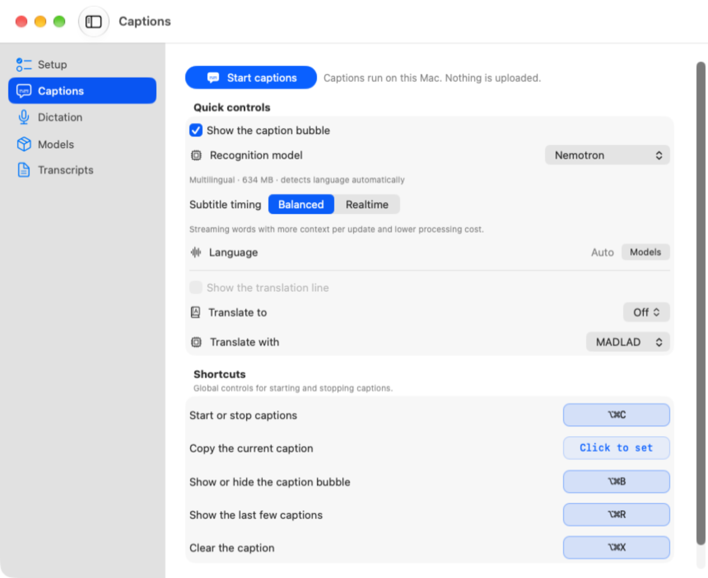
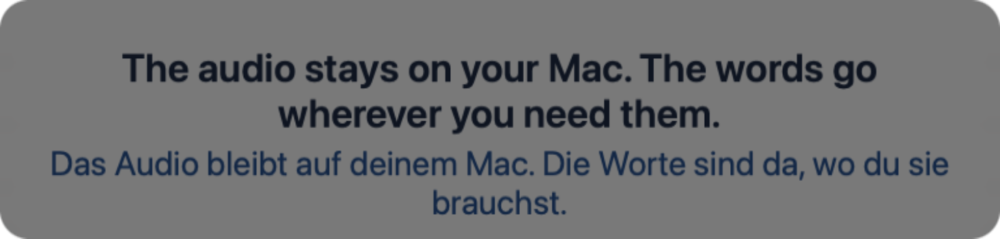
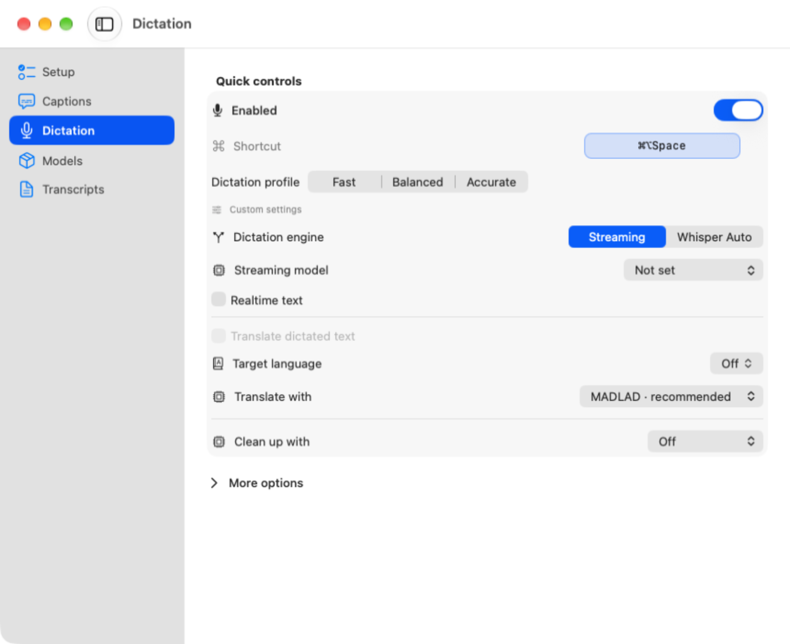
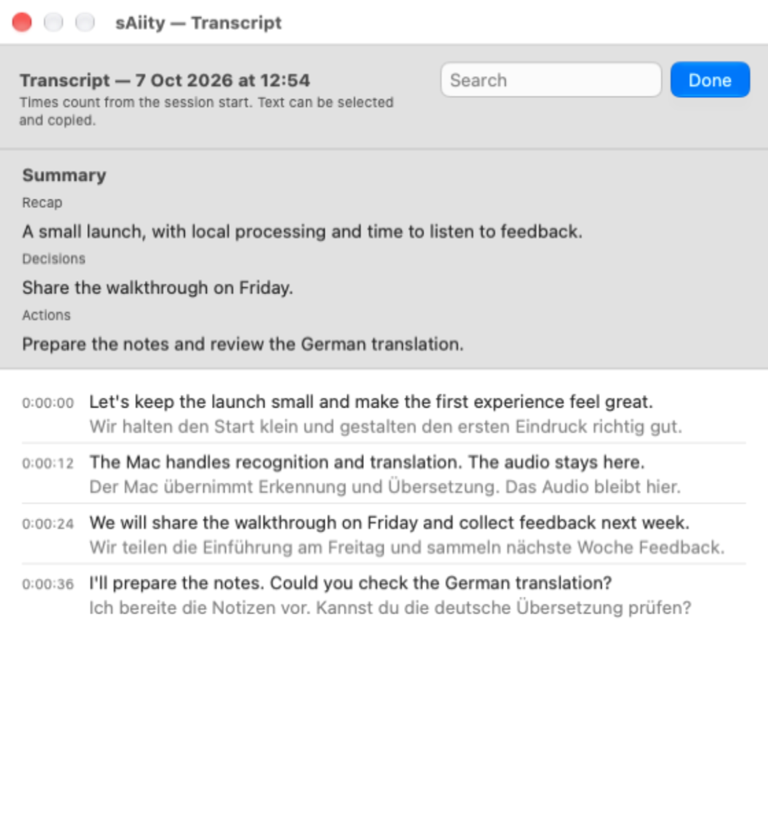

Follow the conversation.
A movable caption bubble turns system audio into readable words. Choose realtime Nemotron captions or a more relaxed, balanced pace.
A little clarity for everything you hear.
Live captions for your Mac’s audio. A second language when you need it. Dictation and transcripts when you want to keep the words.
macOS 26+ · Apple Silicon · No account or API key


Your audio stays here. Recognition and translation run on your Mac.
How privacy worksFrom listening to doing
A movable caption bubble turns system audio into readable words. Choose realtime Nemotron captions or a more relaxed, balanced pace.
Put a local translation below the original. Translate complete sentences, or turn on realtime previews as the sentence grows.
Hold your dictation shortcut and speak. The result goes into the field you started in when possible, and stays on the clipboard.
Save bilingual transcripts, search your sessions, or export SRT, WebVTT, Markdown and plain text. Add a local summary to revisit the essentials.


A native Mac app
Download the signed, notarized app. Move it to Applications. Setup walks you through the models and permissions for the features you choose.
Prefer a ZIP? Download it here ↗You decide what to enable. There’s no account to create.
Weights are downloaded on first use, then stay on your Mac. Check the available storage in the app before downloading.
Captions use macOS Screen Recording permission for system audio. Dictation uses the microphone and Accessibility for insertion into other apps.
Private by design
Audio, recognition, translation and saved transcripts stay on the device. No audio uploads, account, analytics or API key.
Model downloads need an internet connection. Update checks are opt-in. The captions microphone mixer is off by default; dictation uses it only while you hold the shortcut.
sAiity requires macOS 26 or later and Apple Silicon. Intel Macs and Windows are not supported releases. Model speed depends on your Mac, available memory and the models you choose.
To download models and, if enabled, check for updates. Once the chosen models are installed, recognition and translation run locally.
Yes. Language coverage depends on the recognition and translation engines you select. Dictation without translation preserves supported spoken languages; turning translation on asks for the result in your chosen target language.
Version 2.6.6 opens Summarize, Summarize Again and Remove Summary in the resizable transcript reader. It uses the Gemma cleanup model already installed for dictation and does not download another model. Summaries can miss or invent details, and long transcripts may omit earlier lines. Original spoken lines and subtitle exports are preserved.
Version 2.6.6 · Signed and notarized